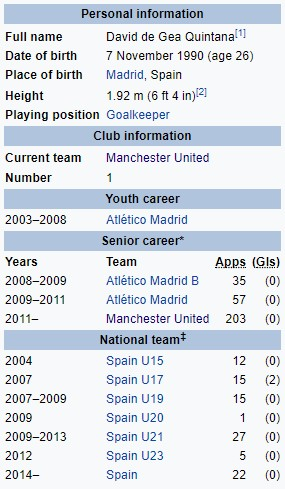

Давид Де Хеа
Рођен у Мадриду, Де Геа је започео своју каријеру са 13 година са Атлетиком Мадридом и прошао кроз академски систем у клубу пре него што је имао свој први деби 2009. године. Након што је постао Атлетиков први голман, помогао је тиму да освоји и УЕФА Лигу Европе и УЕФА Супер Куп 2010. године. Његове игре привукле су пажњу Манчестер Јунајтеда, којем се придружио у јуну 2011. за 18,9 милиона фунти, што је британски рекорд за голмана. Од придруживања Јунајтеду, Де Геа је имао више од 200 наступа и освојио титулу у Премијер лиги, ФА Куп, Лига куп, три Комјунити шилда и УЕФА Лигу Европе. За три узастопне сезоне од 2013-14. до 2015-16., изабран је за Јунајтедовог Мет Базби играча године, првог играча у историји награде који ће победити у три узастопне прилике. Де Геа је био капитен за национални тим испод 21 Шпаније која је освојила Европско првенство у 2011. и 2013. години, а такмичила се и на Олимпијским играма 2012. године. Направио је свој деби за сениорску екипу у 2014. години и био је изабран за тај Светски куп. Многи му предвиђају да постане наследник Икера Касиљаса као дугогодишњег голмана Шпаније.
